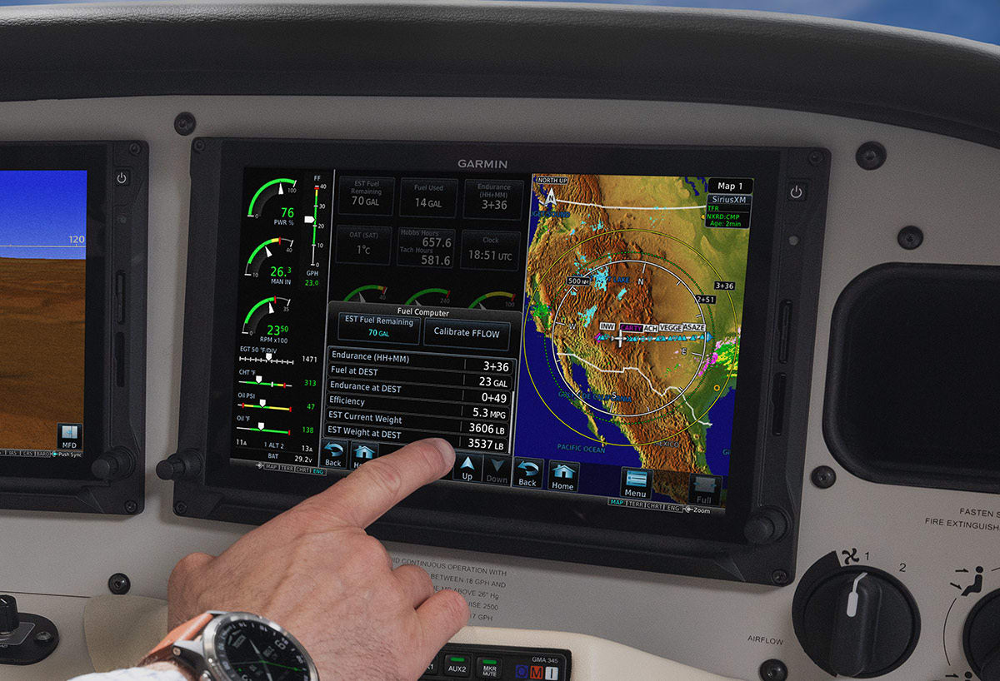
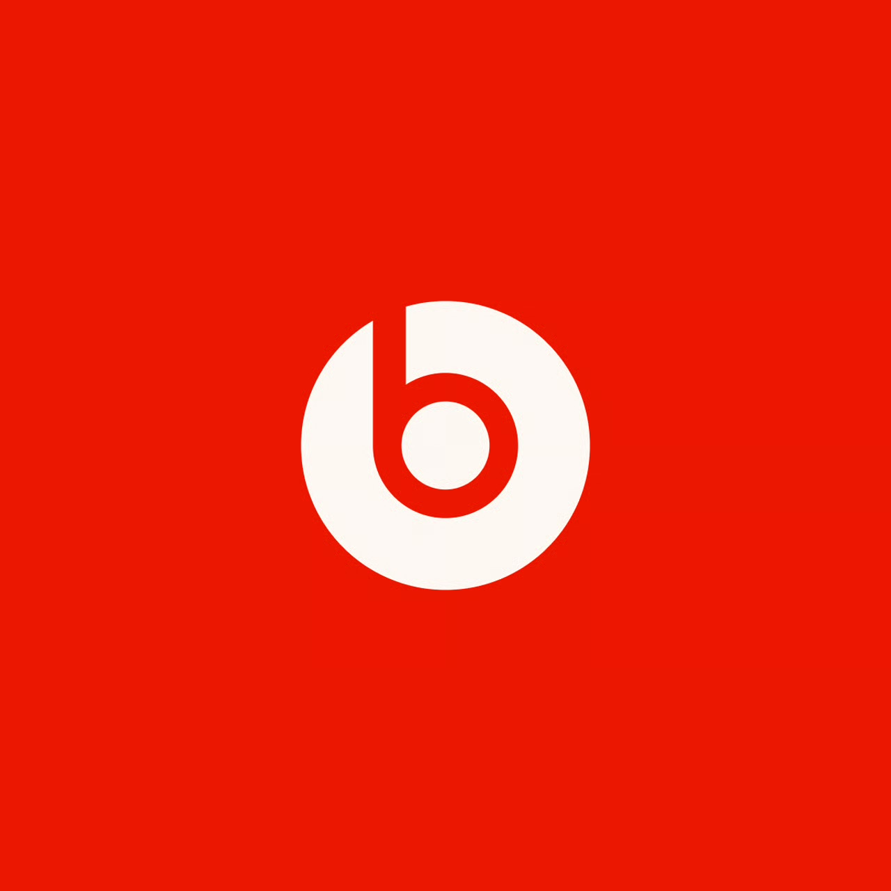
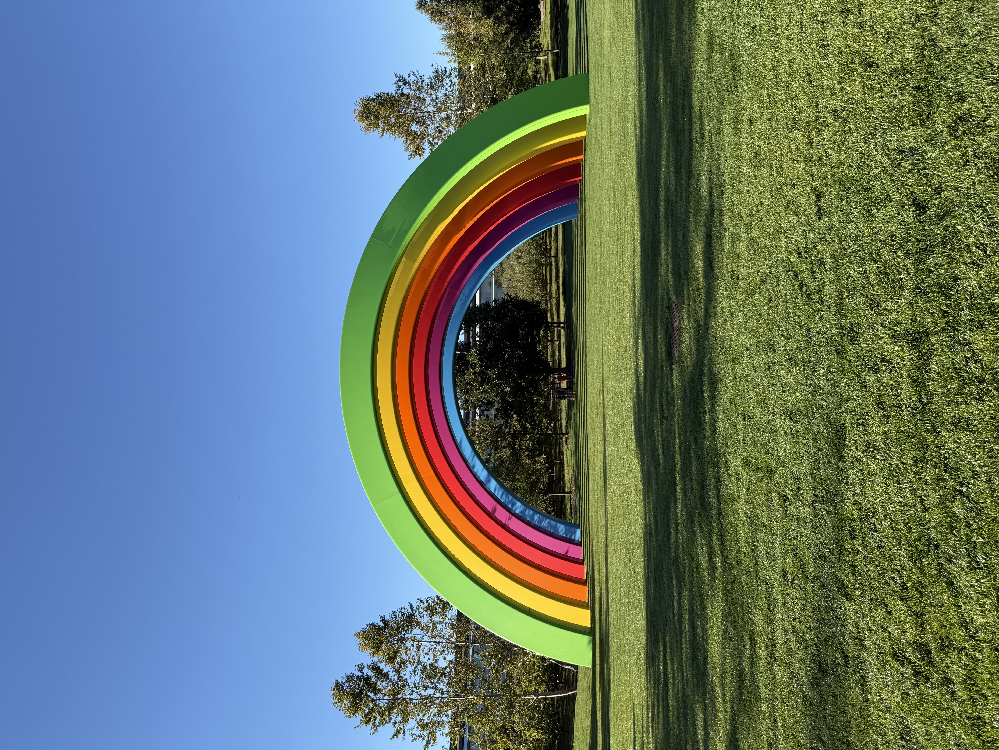
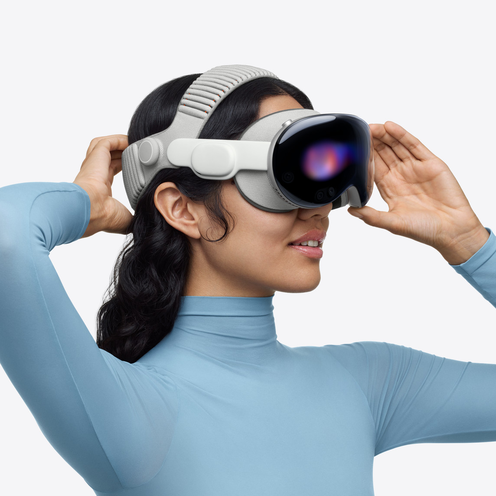
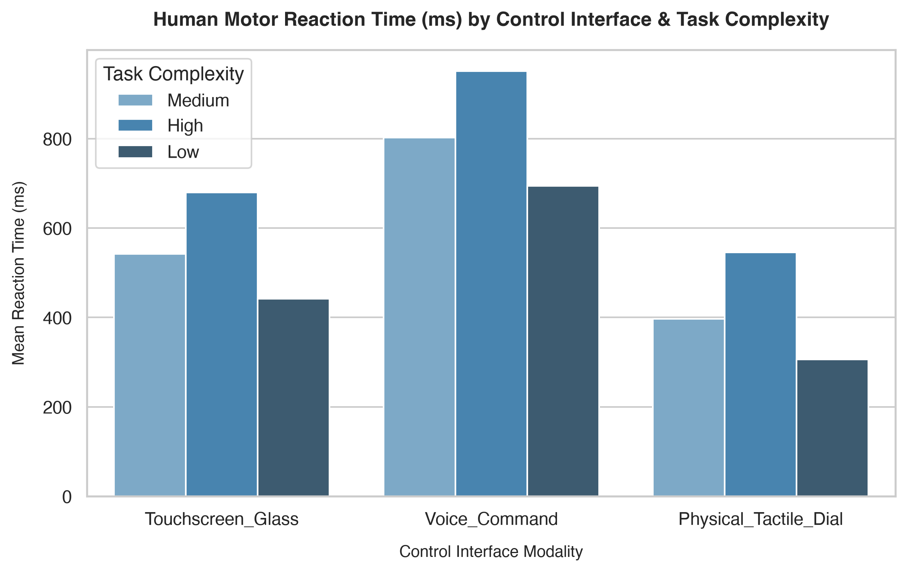
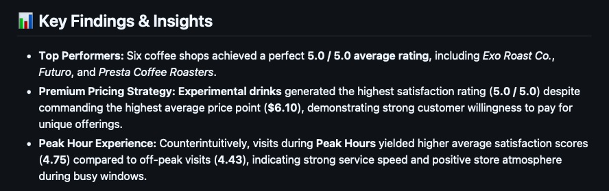

Alex Lisko
Human Factors Engineer & UX Researcher with end-to-end experience spanning exploratory R&D to mass production. Track record of driving user research for flagship Apple initiatives including the Apple Vision Pro Dual Knit Band and core Siri features for Apple Intelligence—reaching millions worldwide. Expertise across spatial computing, multi-modal AI, and aviation human factors.

GroceryApp: Fridge & Pantry Tracker Case Study

Garmin: Engine Indicating System Redesign

Beats Experience Concept

Led the Design and Launch of Two Apple Research Lab Spaces

Apple Vision Pro Dual Knit Band
Apple Intelligence Siri 2024 Launch

Case Study: Comparative Human Performance & Ergonomic Evaluation of Control Interfaces

Arizona Coffee Shop Data & Sentiment Analysis